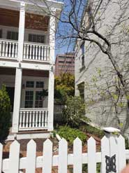

Летними вечерами я люблю гулять по моему району, по дорожкам между выросших домиков-грибочков, высоких строгих деревьев-стражей и испуганно прыгающих белок. Я люблю гулять по одному и тому же маршруту: то поднимаясь на знакомые возвышенности, то, следуя крутому повороту дороги, идти вниз.Дома сменяют друг друга, они разные: то белые, то из красного кирпича. В каждом из них — жизнь, разная жизнь. В одном из домов так много детей, что они как горошины рассыпаны на крыльце дома. А возле следующего дома — целый гараж дорогих и элитных машин. А вот дом, где живёт пожилая пара, которая каждый вечер выходит на прогулку, держась за руки. А этот огромный дом пуст и выставлен на продажу.
Вокруг домов живут сады. Они такие же разные, как и дома, как и люди, населяющие эти дома. Вот строгие структуры елей, их иголки как щётки очищают пространство вокруг дома и говорят: «Сюда не подходи, тут не любят шума и лишних людей». А этот сад — сплошные цветы и декорации, он смеётся детской душой своих старых владельцев, он кричит: «Посмотрите, мы все — солнечные зайчики, мы — радужная дорожка, мы — детские сказки, независимо от того, сколько нам лет!». А вот этот сад — совсем не сад, это скорее огород. Тут только полезное: плоды, бобовые, подсолнухи, ростки томатов. В этом доме людям не до тишины и не до игры в сказку, им надо выжить, они выращивают пищу. А следующий дом вообще без сада — только изгородь строго подстриженных кустов. Он отделён от всего, что может помешать его хозяину оптимально и эффективно тратить свой ресурс времени. Скорее всего, тут живёт бизнесмен или юрист.
Но моя дорога лежит не только среди домов. Есть место на моём пути, которое проходит по самой кромке шоссе. Там всегда шум машинных двигателей, свет их фар и скоростное верчение колёс. Мой путь пролегает между этим шоссе и куском старого заброшенного сада. Я каждый раз прохожу мимо высокого могучего древа, которое своими ветвями почти наклоняется над шоссе. Это дерево не отличается на первый взгляд от рядом растущего дуба и каштана... Но я жду осени. У нас с этим деревом есть тайна, есть ритуал, есть отношения и история.

Однажды, проходя мимо него в конце августа, я оторвалась от плавного течения своих мыслей и посмотрела наверх — на руки-ветки этого дерева. Они были протянуты ко мне, они мне давали кое-что, предлагали и просили: «Возьми, пожалуйста, возьми». Это были яблоки. Очень маленькие «райские» яблоки. Старая яблоня рождала их, как и предписывает ей её природа, каждый год. Но больше не было людей, которые ели бы эти яблоки, радовались им, варили варенье и пекли яблочные пироги. Её цветы всё так же опыляли пчёлы, а мякоть яблок склёвывали птицы. Её плоды падали на землю, прорастали, но приходили люди и состригали траву вместе с ростками её семян...
Я смотрю на её протянутую ко мне ветку, на ней десятки плодов. Дерево старое, сил у него уже не много, многие плоды лишены иммунной защиты и изъедены жуками, покрыты паутиной и признаками гнили. Но есть очень здоровые, жёлтые, ровные яблочки. Я срываю, пробую — они вкусные, сладкие, сочные. Я с благодарностью смотрю на яблоню, она шепчет: «Возьми ещё». Я срываю яблоко за яблоком, они мелкие, на один-два укуса. Я набиваю ими карманы, я буду ими наслаждаться на моём пути, я принесу их домой и положу на тарелочку, я буду помнить о тебе, яблоня.Уже темнеет, карманы распухли от вкусного содержимого, мне пора домой. Я смотрю на яблоню и вижу её успокоение и благодарность за принятие того единственного, для чего её когда-то посадили.
Я смотрю на неё с пониманием и благодарностью. Я глажу её ветки: «Я к тебе вернусь завтра, яблонька, а ещё — следующим августом. Я буду рада приготовленному тобой угощению. Ты не зря живёшь, твои яблоки всё ещё нужны».